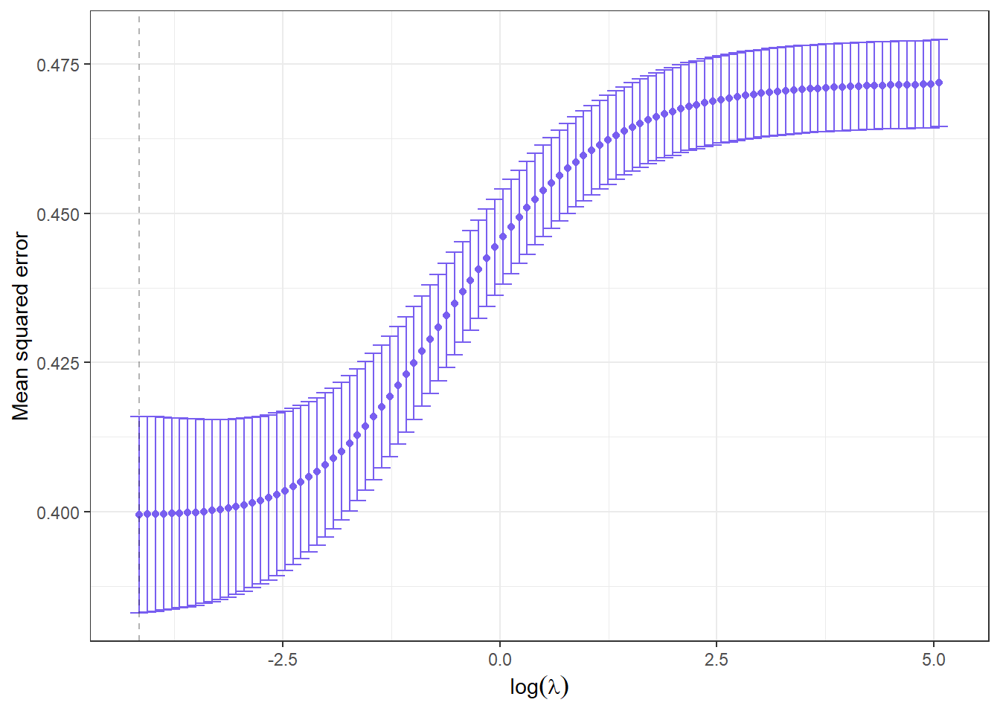
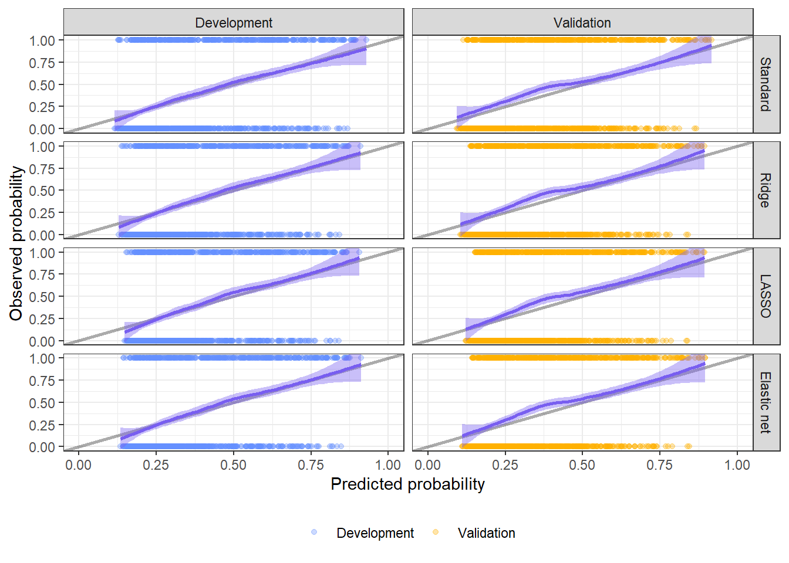

# Loading packages
pacman::p_load("dplyr", # Data wrangling
"magrittr", # More efficient pipelines
"tidyr", # Data tidying
"rio", # Importing data
"glmnet", # Shrinkage methods
"pROC", # C-statistics
"knitr", # Markdown functions
"ggplot2", # Data visualization
"patchwork" # Patching plots together
)PINT - Prediction Practical 2
Shrinkage Methods for Prediction Models
1 Preface
This R practical will discuss some shrinkage methods for prediction models in R. It assumes that you are aware of how prediction models are developed in R, as discussed in the first practical.
2 Introduction
In this practical, we will see how to implement different shrinkage methods, specifically ridge regression, LASSO regression, and elastic net regression. Additionally, we will look at bootstrap-based uniform shrinkage (BU).
At the end of this practical, you will know how you can estimate the regularization parameter (\(\lambda\)) and use it to perform these shrinkage-based regressions, as well as perform BU.
3 Set-up
3.1 Packages
As usual, before we get going, we will load some useful packages.
3.2 Loading data
For this practical, we will again use the Traumatic brain injury (TBI) data. This dataset contains 2,159 patients from the international and US Tirilazad trials (distributed here for didactic purposes only). The primary outcome was the Glasgow Outcome (range 1 through 5) at 6 months.
The TBI dataset was sent to you together with this practical and can be loaded from your local device:
# Specify path of TBI dataset
path <- "C:/users/avid_PINT_student/documents/pint/TBI.txt"
# Load TBI data
tbi <- import(path)Warning in (function (input = "", file = NULL, text = NULL, cmd = NULL, :
Detected 24 column names but the data has 25 columns (i.e. invalid file). Added
1 extra default column name for the first column which is guessed to be row
names or an index. Use setnames() afterwards if this guess is not correct, or
fix the file write command that created the file to create a valid file.The warning we receive is the result of row numbers being present in the .txt file (as also guessed by import()). Given that import() guessed correct, we can ignore this warning and treat the extra column V1 as individual identifiers.
Below is the codebook for the TBI data.
| TBI | ||
| Variable | Description | |
| V1 | Identifier | |
| trial | Trial identification | |
| d.gos | Glasgow Outcome Scale at 6 months
|
|
| d.mort | Mortality at 6 months | |
| d.unfav | Unfavourable outcome at 6 months | |
| cause | Cause of injury
|
|
| age | Age (yrs) | |
| d.motor | Admission motor score (range 1-6) | |
| d.pupil | Pupillary reactivity
|
|
| pupil.i | Single imputed pupillary reactivity | |
| hypoxia | Hypoxia before or at admission | |
| hypotens | Hypotension before or at admission | |
| ctclass | Marshall CT classification (range 1-6) | |
| tsah | tSAH at CT | |
| edh | EDH at CT | |
| cisterns | Compressed cisterns at CT
|
|
| shift | Midline shift >5 mm at CT | |
| d.sysbpt | Systolic blood pressure at admission (mmHg) | |
| glucose | Glucose at admission (mmol/L) | |
| glucoset | Truncated glucose values (mmol/L) | |
| ph | pH | |
| sodium | Sodium (mmol/L) | |
| hb | Hemoglobin (g/dL) | |
| hbt | Truncated hemoglobin (g/dL) | |
3.3 Preparing our data
Like last time, we will develop a prediction model for the risk of an unfavourable outcome after a TBI. However, we will geographically split the data into a development dataset (individuals from the Tirilazad US trial) and a validation dataset (individuals from the Tirilazad International trial). Additionally, although not recommended, for educational simplicity, we have again used single imputation for missing data.
3.4 Getting to know our data
To get to know our data, we will look at the number of cases in both datasets.
tbi[["trial"]]: Tirilazad International
0 1
662 456
------------------------------------------------------------
tbi[["trial"]]: Tirilazad US
0 1
646 395 # Distribution of non-cases and cases (as %)
by(tbi[["d.unfav"]], tbi[["trial"]], \(x) proportions(table(x)) * 100)tbi[["trial"]]: Tirilazad International
x
0 1
59.21288 40.78712
------------------------------------------------------------
tbi[["trial"]]: Tirilazad US
x
0 1
62.05572 37.94428 In the development dataset, we can see that we have quite some cases (n = 395, 37.9%). We have a bit more in the validation dataset (n = 456, 40.8%).
We (hypothetically) consulted the same TBI experts as last time, who told us that the most important predictors we want to include are pupillary reactivity (‘pupil.i’), TBI cause (‘cause’), systolic blood pressure (d.sysbpt), and age (‘age’). They do not mention motor activity anymore due to recent research of them. This would mean that there are a total of 8 candidate coefficients. If we were to calculate an events-per-variable (EPV), this would be:
tbi[["trial"]]: Tirilazad International
[1] 57
------------------------------------------------------------
tbi[["trial"]]: Tirilazad US
[1] 49.375This is not bad, but EPV is also not an ideal measure. More formal sample size calculations are available but are outside the scope of this course.
Last time, we already saw that even though age is continuous, a linear term is sufficient to include it in the model. We also checked this for systolic blood pressure, which was also linear.
4 Ridge, LASSO, and elastic net
4.1 Standard model
To show how shrinkage affects the model, we will first develop a standard logistic prediction model.
# Develop the prediction model
fit <- glm(d.unfav ~
age +
d.sysbpt +
pupil.i +
cause,
data = development, family = binomial)
# See output
summary(fit)
Call:
glm(formula = d.unfav ~ age + d.sysbpt + pupil.i + cause, family = binomial,
data = development)
Coefficients:
Estimate Std. Error z value Pr(>|z|)
(Intercept) -1.382712 0.698858 -1.979 0.0479 *
age 0.037291 0.005986 6.230 4.68e-10 ***
d.sysbpt -0.008379 0.004562 -1.836 0.0663 .
pupil.ino reactive pupils 1.836702 0.176985 10.378 < 2e-16 ***
pupil.ione reactive 0.834370 0.206248 4.045 5.22e-05 ***
causedomestic/fall 0.296242 0.293463 1.009 0.3128
causeMotorbike -0.019630 0.309420 -0.063 0.9494
causeother 0.483429 0.283144 1.707 0.0878 .
causeRoad traffic accident 0.266325 0.257151 1.036 0.3004
---
Signif. codes: 0 '***' 0.001 '**' 0.01 '*' 0.05 '.' 0.1 ' ' 1
(Dispersion parameter for binomial family taken to be 1)
Null deviance: 1382.0 on 1040 degrees of freedom
Residual deviance: 1200.2 on 1032 degrees of freedom
AIC: 1218.2
Number of Fisher Scoring iterations: 44.2 Ridge regression
Ridge regression, also known as \(l_2\) regularization, applies a penalty to the maximum likelihood estimator, leading to shrinkage of the regression coefficients, which results in a less optimistic model. In the below formula, the white part shows the maximum likelihood estimator of a logsitic model and the red part the addition of the \(l_2\) regularization:
\[ \log{L} = \sum_iy_i\log{\pi_i}+(1-y_i)\log{(1-\pi_i)}-\color{blue}{\lambda\sum_{j=1}^P\hat{\beta}_j^2} \]
where \(i\) stands for individual \(i\), \(y_i\) is the observed outcome for individual \(i\) and \(\pi_i\) is the predicted outcome for individual i.
We can fit a ridge regression using glmnet() from the {glmnet} package. However, first we require a value for \(\lambda\). The preferred way to determine this is by \(k\)-fold cross-validation, as implemented in the function cv.glmnet()from {glmnet} package:
1# Prepare predictors
x <- development %>%
# Select predictors
select(age, d.sysbpt, pupil.i, cause) %>%
# Change to matrix
2 model.matrix(~ age + d.sysbpt + pupil.i + cause, data = .)
# Remove intercept column from x (makes output easier to read)
x <- x[, -1]
3# Prepare outcome
y <- development %>%
# Select outcome
select(d.unfav) %>%
# Change to matrix
as.matrix()
# Run cross-validation
cv_ridge <- cv.glmnet(x = x,
y = y,
family = "binomial",
type.measure = "mse",
4 alpha = 0,
5 nfolds = 10)
# Get optimal lambda
6(lambda <- cv_ridge[["lambda.min"]])
7# Show results of cross-validation
ggplot(mapping = aes(x = log(cv_ridge[["lambda"]]), y = cv_ridge[["cvm"]],
ymin = cv_ridge[["cvlo"]], ymax = cv_ridge[["cvup"]])) +
# Geometries
geom_point(colour = "#785EF0") +
geom_errorbar(width = 0.2, colour = "#785EF0") +
geom_vline(xintercept = log(lambda), alpha = 0.3, linetype = "dashed") +
# Labels
xlab(expression(log(lambda))) +
ylab("Mean squared error") +
# Aesthetics
theme_bw()- 1
-
The function
cv.glmnet()requires a matrix with the predictors, where each row corresponds to an observation and each column a predictor. - 2
-
Factors are not allowed in the x matrix, which means that we should already create dummy variables for the factors. The function
model.matrix()does this for us. - 3
- The outcome should also be given as a matrix or vector.
- 4
-
We specify
alpha = 0to indicate that we want to use ridge regression. If we usealpha = 1, we indicate LASSO regression. Anything in between would result in elastic net regression. - 5
- We specify 10-fold cross-validation.
- 6
-
The optimal \(\lambda\) is derived by taking
lambda.minfrom the results. - 7
- We can show that the \(\lambda\) we selected (the dashed line) is the one with the lowest mean squared error. The x-axis is in log scale for clarity.

[1] 0.01576116Now we can fit our ridge regression model:
# Fit ridge regression
fit_ridge <- glmnet(x = x,
y = y,
family = "binomial",
alpha = 0,
lambda = lambda)
# Compare coefficients
data.frame(standard = fit[["coefficients"]],
ridge = coef(fit_ridge)[1:9]) standard ridge
(Intercept) -1.382712131 -1.175577461
age 0.037291271 0.033647308
d.sysbpt -0.008378515 -0.007997321
pupil.ino reactive pupils 1.836702419 1.681658780
pupil.ione reactive 0.834370082 0.747330320
causedomestic/fall 0.296242006 0.216124849
causeMotorbike -0.019630030 -0.105348530
causeother 0.483428921 0.370953923
causeRoad traffic accident 0.266325399 0.163070376Comparing these coefficients to the standard model, we may observe that the coefficients are shrunk. If you have a polychotomous predictor, not all coefficients for that predictor might shrink.
If we set \(\lambda\) to 0, we can see that it will be the same as the standard logistic regression:
# Fit ridge regression with lambda 0
fit_glmnet <- glmnet(x = x,
y = y,
family = "binomial",
alpha = 0,
lambda = 0)
# Compare coefficients
data.frame(glm = fit[["coefficients"]],
glmnet = coef(fit_glmnet)[1:9]) glm glmnet
(Intercept) -1.382712131 -1.38090517
age 0.037291271 0.03729148
d.sysbpt -0.008378515 -0.00838120
pupil.ino reactive pupils 1.836702419 1.83677107
pupil.ione reactive 0.834370082 0.83440811
causedomestic/fall 0.296242006 0.29438080
causeMotorbike -0.019630030 -0.02141978
causeother 0.483428921 0.48173948
causeRoad traffic accident 0.266325399 0.264841644.3 LASSO regression
The least absolute shrinkage and selection operator (LASSO) regression functions similar to ridge regression, except that it is able to shrink coefficients to 0, leading to removal of those predictors from the prediction model. It applies the \(l_1\) penalty and is expressed as:
\[ \log{L} = \sum_iy_i\log{\pi_i}+(1-y_i)\log{(1-\pi_i)}-\color{red}{\lambda\sum_{j=1}^{P}\lvert\hat{\beta}_j\lvert} \]
# Run cross-validation
cv_ridge <- cv.glmnet(x = x,
y = y,
family = "binomial",
type.measure = "mse",
1 alpha = 1,
nfolds = 10)
# Get optimal lambda
(lambda <- cv_ridge[["lambda.min"]]) - 1
-
Now we specify
alpha = 1, indicating LASSO regression.
[1] 0.006665778Using our newly estimated \(\lambda\), we can fit a LASSO regression:
# Fit LASSO regression
fit_lasso <- glmnet(x = x,
y = y,
family = "binomial",
alpha = 1,
lambda = lambda)
# Compare coefficients
data.frame(standard = fit[["coefficients"]],
lasso = coef(fit_lasso)[1:9]) standard lasso
(Intercept) -1.382712131 -1.205625924
age 0.037291271 0.034164901
d.sysbpt -0.008378515 -0.006832488
pupil.ino reactive pupils 1.836702419 1.733699634
pupil.ione reactive 0.834370082 0.724259016
causedomestic/fall 0.296242006 0.000000000
causeMotorbike -0.019630030 -0.172487223
causeother 0.483428921 0.175147432
causeRoad traffic accident 0.266325399 0.000000000From this output, we can see that two levels of cause were set to 0, effectively removing those variables from the final prediction model.
4.4 Elastic net regression
A special case is elastic net regression, where we combine the \(l_1\) and \(l_2\) penalties, or in other words blend ridge and LASSO regression. This takes the advantages of both approaches. A logistic elastic net model is expressed as
\[ \log{L} = \sum_iy_i\log{\pi_i}+(1-y_i)\log{(1-\pi_i)}- \color{green}{\lambda}\left( \color{red}{\alpha\sum_{j=1}^{P}\lvert\hat{\beta}_j\lvert}+ \color{blue}{\frac{1-\alpha}{2}\lambda\sum_{p=1}^P\hat{\beta}_p^2}\right) \]
We can see that \(\lambda\) applies to both penalties at the same time and that \(\alpha\) determines to what extent each penalty is applied. For instance, we can perform an elastic net regression with an alpha of 0.5 as follows:
# Fit LASSO regression
fit_elnet <- glmnet(x = x,
y = y,
family = "binomial",
alpha = 0.5,
lambda = lambda)
# Compare coefficients
data.frame(standard = fit[["coefficients"]],
`elastic net` = coef(fit_elnet)[1:9]) standard elastic.net
(Intercept) -1.382712131 -1.209473918
age 0.037291271 0.034777340
d.sysbpt -0.008378515 -0.007578833
pupil.ino reactive pupils 1.836702419 1.751092692
pupil.ione reactive 0.834370082 0.761231615
causedomestic/fall 0.296242006 0.105928816
causeMotorbike -0.019630030 -0.140934396
causeother 0.483428921 0.279230861
causeRoad traffic accident 0.266325399 0.077015633
Note
Note that for ridge regression, LASSO regression, and elastic net regression, we need to estimate separate \(\lambda\)’s.
4.5 Performance
4.5.1 Set-up for calculating validation measures
Now that we fit our standard and shrunk models, we can see how they compare in performance, especially in an external validation set.
We will first create a function to calculate the C-statistic for our models:
# Function to calculate C-statistic for output of a glmnet
cstat <- function(fit, x, y, df){
# Calculate predictions for glmnet output
if("glmnet" %in% class(fit)) preds <- predict(fit, newx = x, type = "response")
# Calculate predictions for glm output
else preds <- predict(fit, newdata = df, type = "response")
# Calculate C-statistic
cst <- roc(as.numeric(y), as.numeric(preds), levels = c(0, 1), direction = "<")
# Return c-statistic
return(cst[["auc"]][[1]])
}We do not need to create these functions. However, to keep our script legible and more efficient, we pooled together the calculation of C-statistics for glm and glmnet objects. Simply, it calculates the predictions based on whether the model was fitted using glm() or glmnet() and then uses the roc() function from {pROC} to calculate the C-statistic and return it.
We will also need to create the x and y matrices of the validation data:
# Prepare predictors
x_val <- validation %>%
# Select predictors
select(age, d.sysbpt, pupil.i, cause) %>%
# Change to matrix
model.matrix(~ age + d.sysbpt + pupil.i + cause, data = .)
# Remove intercept column from x (makes output easier to read)
x_val <- x_val[, -1]
# Prepare outcome
y_val <- validation %>%
# Select outcome
select(d.unfav) %>%
# Change to matrix
as.matrix()Moreover, we will create a function to calculate the calibration intercept and slope for all models:
# Function to calculate calibration metrics
calmetrics <- function(fit, x = NULL, y = NULL, df = NULL){
# Calculate predictions for glmnet output
if("glmnet" %in% class(fit)) preds <- predict(fit, newx = x)
# Calculate predictions for glm output
else preds <- predict(fit, newdata = df)
# Calculate calibration
fit_cal <- glm(y ~ preds, family = binomial)
# Get intercept and slope
results <- list(intercept = round(fit_cal[["coefficients"]][[1]], 3),
slope = round(fit_cal[["coefficients"]][[2]], 3))
# Return results
return(results)
}The last thing we will do is putting all predictions in a single data frame to draw our calibration plots:
# Function to calculate predictions
preds <- function(fit, x, y, df){
# Calculate predictions for glmnet output
if("glmnet" %in% class(fit)) preds <- predict(fit, newx = x, type = "response")
# Calculate predictions for glm output
else preds <- predict(fit, newdata = df, type = "response")
# Return predictions
return(preds)
}
## Create data for each model
# Standard model
dat_standard <- tibble(cohort = c(rep("Development", nrow(development)), rep("Validation", nrow(validation))),
preds = c(preds(fit, y = y, df = development), preds(fit, y = y_val, df = validation)),
obs = c(y, y_val)) %>%
# Add indicator
mutate(model = "Standard")
# Ridge model
dat_ridge <- tibble(cohort = c(rep("Development", nrow(development)), rep("Validation", nrow(validation))),
preds = c(preds(fit_ridge, x, y), preds(fit_ridge, x_val, y_val)),
obs = c(y, y_val))%>%
# Add indicator
mutate(model = "Ridge")
# LASSO model
dat_lasso <- tibble(cohort = c(rep("Development", nrow(development)), rep("Validation", nrow(validation))),
preds = c(preds(fit_lasso, x, y), preds(fit_lasso, x_val, y_val)),
obs = c(y, y_val))%>%
# Add indicator
mutate(model = "LASSO")
# Elastic net model
dat_elnet <- tibble(cohort = c(rep("Development", nrow(development)), rep("Validation", nrow(validation))),
preds = c(preds(fit_elnet, x, y), preds(fit_elnet, x_val, y_val)),
obs = c(y, y_val))%>%
# Add indicator
mutate(model = "Elastic net")
# Combine all data
dat_cal <- rbind(dat_standard,
dat_ridge,
dat_lasso,
dat_elnet) %>%
# Change models to factor
mutate(model = factor(model, levels = c("Standard", "Ridge", "LASSO", "Elastic net")))4.5.2 Validate models
Now we can determine how the different models performed.
# Calculate C-statistics
cstats <- tibble(model = rep(c("standard", "ridge", "lasso", "elastic net"), 2),
cohort = c(rep("development", 4), rep("validation", 4)),
cstat = c(cstat(fit, y = y, df = development), cstat(fit_ridge, x, y),
cstat(fit_lasso, x, y), cstat(fit_elnet, x, y),
cstat(fit, y = y_val, df = validation), cstat(fit_ridge, x_val, y_val),
cstat(fit_lasso, x_val, y_val), cstat(fit_elnet, x_val, y_val)))
# Pivot data
cstats %<>% pivot_wider(names_from = cohort, values_from = cstat)
# Print results
kable(cstats)| model | development | validation |
|---|---|---|
| standard | 0.7385586 | 0.7011399 |
| ridge | 0.7380766 | 0.7012724 |
| lasso | 0.7367324 | 0.7026008 |
| elastic net | 0.7375632 | 0.7020608 |
Let’s also look at the calibration metrics
# Calculate C-statistics
calibm <- tibble(model = rep(c("standard", "ridge", "lasso", "elastic net"), 2),
cohort = c(rep("development", 4), rep("validation", 4)),
intercept = c(calmetrics(fit, y = y, df = development)[[1]], calmetrics(fit_ridge, x, y)[[1]],
calmetrics(fit_lasso, x, y)[[1]], calmetrics(fit_elnet, x, y)[[1]],
calmetrics(fit, y = y_val, df = validation)[[1]], calmetrics(fit_ridge, x_val, y_val)[[1]],
calmetrics(fit_lasso, x_val, y_val)[[1]], calmetrics(fit_elnet, x_val, y_val)[[1]]),
slope = c(calmetrics(fit, y = y, df = development)[[2]], calmetrics(fit_ridge, x, y)[[2]],
calmetrics(fit_lasso, x, y)[[2]], calmetrics(fit_elnet, x, y)[[2]],
calmetrics(fit, y = y_val, df = validation)[[2]], calmetrics(fit_ridge, x_val, y_val)[[2]],
calmetrics(fit_lasso, x_val, y_val)[[2]], calmetrics(fit_elnet, x_val, y_val)[[2]]))
# Pivot data
calibm %<>% pivot_wider(names_from = cohort, values_from = c(intercept, slope))
# Print calibration metrics
kable(calibm)| model | intercept_development | intercept_validation | slope_development | slope_validation |
|---|---|---|---|---|
| standard | 0.000 | 0.154 | 1.000 | 0.875 |
| ridge | 0.046 | 0.199 | 1.096 | 0.959 |
| lasso | 0.041 | 0.219 | 1.086 | 0.974 |
| elastic net | 0.031 | 0.198 | 1.065 | 0.945 |
We can also look at the calibration plots:
# Create calibration plots for each model
ggplot(dat_cal, mapping = aes(x = preds, y = obs, colour = cohort)) +
# Geometries
geom_abline(linewidth = 1, colour = "black", alpha = 0.33) +
geom_point(alpha = 0.33) +
geom_smooth(colour = "#785EF0", fill = "#785EF0", method = "loess", formula = "y ~ x") +
# Scaling
scale_colour_manual(values = c("#648FFF", "#FFB000"), aesthetics = c("fill", "colour")) +
# Labels
xlab("Predicted probability") +
ylab("Observed probability") +
# Transformations
coord_cartesian(xlim = c(0, 1), ylim = c(0, 1)) +
facet_grid(rows = vars(model), cols = vars(cohort)) +
# Aesthetics
theme_bw() +
theme(legend.title = element_blank(),
legend.position = "bottom")
What we see is that (although small for the C-statistics), the standard model performs better in the development data, but worse in the validation data. Note however that this does not have to be the case: van Calster et al..
5 Bootstrap-based uniform shrinkage
The shrinkage methods we just saw work by adding a penalty to the maximum likelihood estimator. A different aprpoach is bootstrap-based uniform shrinkage, which calculates a shrinkage factor and uses this to penalize the estimated regression coefficients (instead of penalizing the estimator that estimates the coefficients). This is also the method used in the {rms} package as seen in the first practical.
5.1 Development
In short, we develop the prediction model on our full development data. Then, we bootstrap the data \(B\) times and redevelop the model in each bootstrap sample \(b\). Each redeveloped model is applied to the development data and a calibration slope is calculated. Then, the shrinkage factor \(s\) equals the average calibration slope among all bootstrap samples. The final regression coefficients are then calculated as \(\hat{\beta}_{j,shrunk} = \hat{\beta}_j * s\).
We already developed our standard model. For the bootstrapping, we can do:
# Specify number of bootstraps
b <- 500
# Start bootstrapping procedure
1s <- sapply(1:b, \(x){
# Set seed based on bootstrap iteration
2 set.seed(x)
# Randomly sample data with replacement
dat_smp <- slice_sample(development,
3 n = nrow(development),
4 replace = TRUE)
# Redevelop model
fit_smp <- glm(d.unfav ~
age +
d.sysbpt +
pupil.i +
cause,
5 data = dat_smp, family = binomial)
# Get linear predictors
6 development[["lps"]] <- predict(fit_smp, newdata = development)
# Calculate calibration slope
7 slope <- glm(d.unfav ~ lps, data = development, family = binomial)[["coefficients"]][["lps"]]
# Return slope
return(slope)
}) %>%
# Take mean
8 mean()- 1
-
Start bootstrapping procedure, where we iterate 500 times (b) and call a function (
\(x)). - 2
- Set a seed for the random process each bootstrap (the sampling)
- 3
- Sample as many individuals as our data contains.
- 4
- Sample is with replacement, meaning the same individual can be sampled multiple times.
- 5
- Redevelop the model on the sampled data.
- 6
- Make predictions on the development data using the sample-based prediction model.
- 7
- Calculate the slope.
- 8
- Take the mean of the slopes from all bootstraps.
Now that we have \(s\), we can multiply it with the coefficients of the standard model:
# Take coefficients from standard model and multiply by s
coefs <- fit[["coefficients"]] * s
# Compare coefficients
data.frame(standard = fit[["coefficients"]],
bu = coefs) standard bu
(Intercept) -1.382712131 -1.323924298
age 0.037291271 0.035705784
d.sysbpt -0.008378515 -0.008022292
pupil.ino reactive pupils 1.836702419 1.758612589
pupil.ione reactive 0.834370082 0.798895735
causedomestic/fall 0.296242006 0.283646886
causeMotorbike -0.019630030 -0.018795434
causeother 0.483428921 0.462875302
causeRoad traffic accident 0.266325399 0.2550022235.2 Validation
Prior to validating the model, we will wrangle the existing model fit a bit so that it contains the information relevant for validating the model.
# Update fit with new coefficients
fit_bu <- fit
# Add updated coefficients
fit_bu[["coefficients"]] <- coefs
# Recalculate linear predictors
# We perform matrix multiplication of each individual's values with the coefficients minus the intercept (as the matrix x does not contain this). Afterwards, we add the intercept again.
fit_bu[["linear.predictors"]] <- x %*% as.matrix(fit_bu[["coefficients"]])[2:9] + fit_bu[["coefficients"]][[1]]
# Recalculate the predicted risk
fit_bu[["fitted.values"]] <- exp(fit_bu[["linear.predictors"]]) / (1 + exp(fit_bu[["linear.predictors"]]))This may seem like a bit of a hassle, especially since the {rms} package already implements this. On the other hand, as discussed in the previous practical, using the {rms} package might have its downsides.
Now let’s see the validation metrics:
tibble(model = c("standard", "BU"),
cstat_dev = c(cstat(fit, y = y, df = development), cstat(fit_bu, y = y, df = development)),
cstat_val = c(cstat(fit, y = y_val, df = validation), cstat(fit_bu, y = y_val, df = validation)),
intercept_dev = c(calmetrics(fit, y = y, df = development)[[1]], calmetrics(fit_bu, y = y, df = development)[[1]]),
intercept_val = c(calmetrics(fit, y = y_val, df = validation)[[1]], calmetrics(fit_bu, y = y_val, df = validation)[[1]]),
slope_dev = c(calmetrics(fit, y = y, df = development)[[2]], calmetrics(fit_bu, y = y, df = development)[[2]]),
slope_val = c(calmetrics(fit, y = y_val, df = validation)[[2]], calmetrics(fit_bu, y = y_val, df = validation)[[2]]))# A tibble: 2 × 7
model cstat_dev cstat_val intercept_dev intercept_val slope_dev slope_val
<chr> <dbl> <dbl> <dbl> <dbl> <dbl> <dbl>
1 standard 0.739 0.701 0 0.154 1 0.875
2 BU 0.739 0.701 0 0.154 1.04 0.914We see that the C-statistics remained the same, likely because the shift in final predictions was small. However, the calibration of the standard model was better than the bootstrapped model in the development data, but worse in the validation data, as expected.
6 Final words
We now discussed different shrinkage methods and have seen how to implement these. There are other methods available for shrinkage and these methods can also be applied to regression models other than logistic regression, but you are now familiar with the implementation of some of the most popular approaches.
7 Postscript
This practical was developed on:
R version 4.4.1 (2024-06-14 ucrt)
Platform: x86_64-w64-mingw32/x64
Running under: Windows 11 x64 (build 22631)
Matrix products: default
locale:
[1] LC_COLLATE=English_United Kingdom.utf8
[2] LC_CTYPE=English_United Kingdom.utf8
[3] LC_MONETARY=English_United Kingdom.utf8
[4] LC_NUMERIC=C
[5] LC_TIME=English_United Kingdom.utf8
time zone: Europe/Amsterdam
tzcode source: internal
attached base packages:
[1] stats graphics grDevices utils datasets methods base
other attached packages:
[1] patchwork_1.2.0 ggplot2_3.5.1 knitr_1.48 pROC_1.18.5
[5] glmnet_4.1-8 Matrix_1.7-0 rio_1.2.1 tidyr_1.3.1
[9] magrittr_2.0.3 dplyr_1.1.4
loaded via a namespace (and not attached):
[1] utf8_1.2.4 generics_0.1.3 shape_1.4.6.1 lattice_0.22-6
[5] digest_0.6.36 evaluate_0.24.0 grid_4.4.1 iterators_1.0.14
[9] fastmap_1.2.0 R.oo_1.26.0 foreach_1.5.2 plyr_1.8.9
[13] jsonlite_1.8.8 R.utils_2.12.3 survival_3.6-4 mgcv_1.9-1
[17] purrr_1.0.2 fansi_1.0.6 scales_1.3.0 codetools_0.2-20
[21] cli_3.6.3 rlang_1.1.4 R.methodsS3_1.8.2 munsell_0.5.1
[25] splines_4.4.1 withr_3.0.1 yaml_2.3.10 tools_4.4.1
[29] colorspace_2.1-1 pacman_0.5.1 vctrs_0.6.5 R6_2.5.1
[33] lifecycle_1.0.4 htmlwidgets_1.6.4 pkgconfig_2.0.3 pillar_1.9.0
[37] gtable_0.3.5 data.table_1.15.4 glue_1.7.0 Rcpp_1.0.13
[41] xfun_0.46 tibble_3.2.1 tidyselect_1.2.1 farver_2.1.2
[45] nlme_3.1-164 htmltools_0.5.8.1 labeling_0.4.3 rmarkdown_2.27
[49] compiler_4.4.1